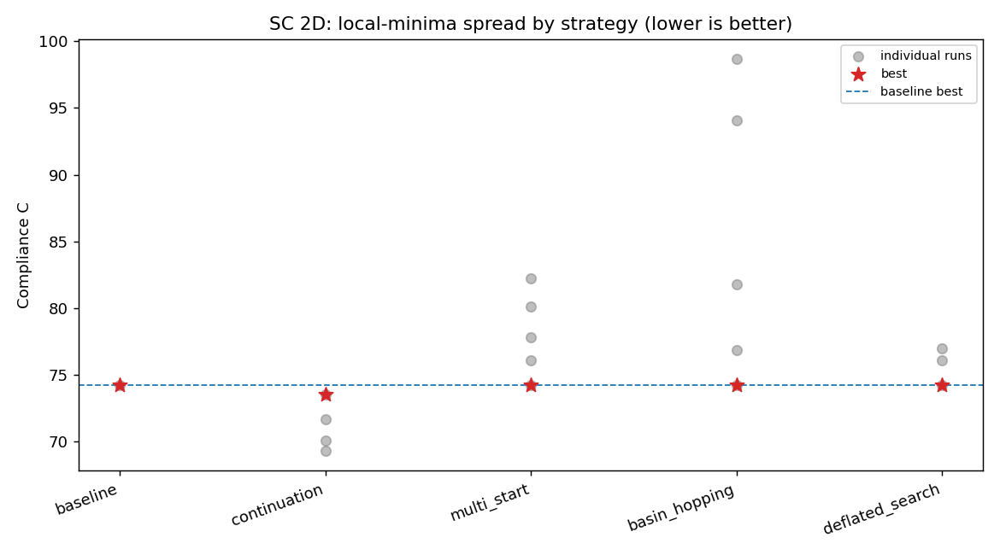
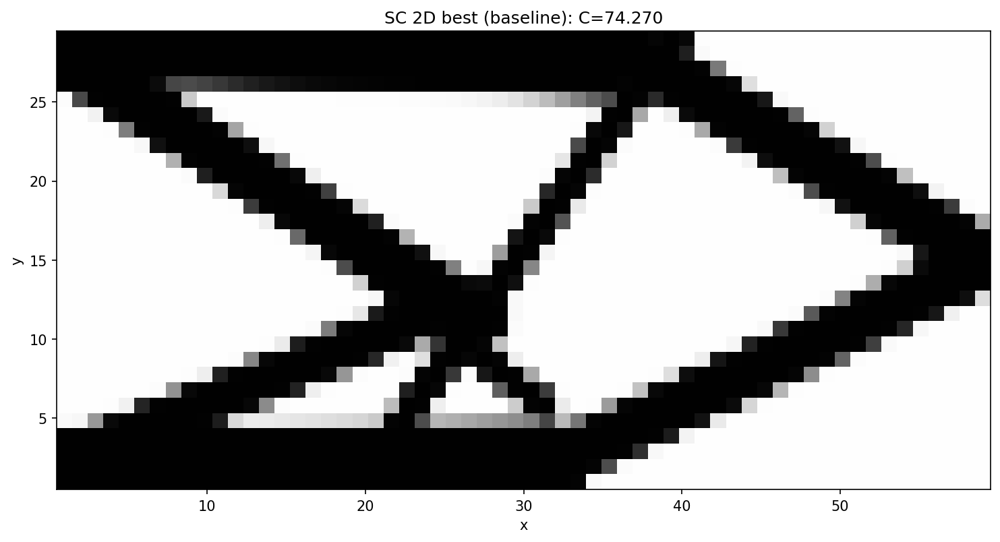
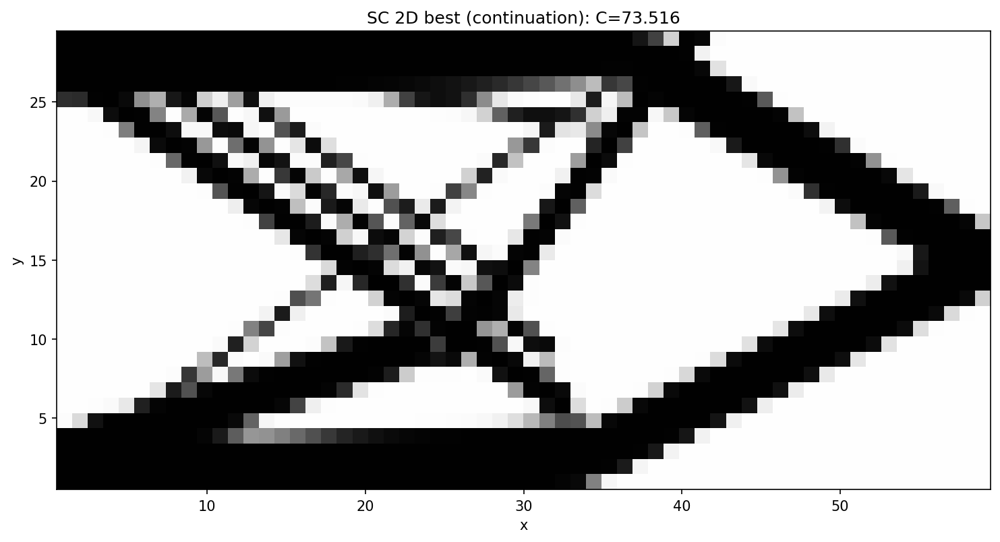

Reaching improved local minima in GGP topology optimization
A state-of-the-art review of techniques for escaping poor local minima in Lagrangian / gradient-based topology optimization, and their implementation and benchmarking inside GGP-Topo on the Short Cantilever 2D (SC 2D) use case.
1. The problem
Density- and component-based topology optimization (TO) minimizes a compliance-type
objective subject to a volume constraint. The discretized problem is strongly
non-convex: the material-interpolation penalization (SIMP p, GGP membership
Mc) and the geometry projection create many stationary points. Gradient-based
“Lagrangian” solvers — MMA, SLP, CONLIN, the optimality-criteria update, augmented
Lagrangian — are all local: they descend into whatever basin contains the
starting point and certify only a KKT point, never global optimality.
For the Generalized Geometry Projection (GGP) family — and its relatives MMC (Moving Morphable Components), MMV, and geometry projection of bars/plates — this is especially acute:
Initial-layout sensitivity. The optimizer rearranges a fixed number of explicit components (bars). The final topology is largely determined by where the bars start and how they are allowed to merge/split, so two reasonable initial layouts routinely converge to visibly different structures with different compliances (Guo et al. 2014; Zhang et al. 2016).
Landscape sharpness. The KS aggregation parameter
ka, the smooth-saturation steepnesspp, the sampling-window radiusr_gp, and the SIMP exponentpcontrol how rugged the landscape is. Sharp settings give crisp, manufacturable designs but a rugged landscape full of local traps; smooth settings give a benign landscape but blurry, intermediate-density designs.
In GGP-Topo this manifests concretely: GGPPipeline.run() performs one
deterministic start with fixed sharpness (ka=10, pp=100, r_gp from the
spec, p_penalty fixed by the formulation method) and no restart/continuation/
global-search layer. This document reviews how the literature attacks this, then
implements and benchmarks the most promising techniques.
2. State of the art
2.1 Continuation / homotopy (most widely used)
Solve a sequence of related, progressively harder problems, warm-starting each from the previous optimum, so the optimizer is guided through a benign landscape before the rugged one is imposed:
SIMP penalization continuation — ramp
pfrom 1 (convex-ish, gray) to 3–5 (crisp). Standard practice (Bendsøe & Sigmund 2003; Sigmund & Maute 2013, Topology optimization approaches, SMO).Heaviside / projection β-continuation — gradually sharpen the projection/threshold to remove gray and control length scale (Guest et al. 2004; Wang, Lazarov & Sigmund 2011). The MMC/MMV literature uses the analogous sharpening of the component characteristic function (Zhang, Yuan, Zhang & Guo 2016).
Filter-radius and mesh continuation — start coarse/heavily filtered, refine.
The GGP analogue is sharpness continuation: ramp r_gp (sampling window),
ka (aggregation), pp (saturation) and/or p_penalty from smooth to sharp.
GGP-Topo’s own legacy free_runner.py carried an unused r_gp = [1.5, 1.0, 0.5]
schedule — exactly this idea.
2.2 Multi-start / random restart
Run the local solver from many diverse initial designs and keep the best (best-of-N). Embarrassingly parallel and a strong baseline for any non-convex problem. For MMC/GGP it directly targets initial-layout sensitivity: randomizing component positions, angles and lengths samples distinct basins (Guo et al. 2014; Zhang et al. 2016). The cost is N local solves; the payoff is robust improvement and an empirical picture of how rugged the landscape actually is.
2.3 Stochastic perturbation: basin hopping & simulated annealing
Hybridize local descent with stochastic global moves. Basin hopping (Wales &
Doye 1997) alternates a local minimization with a random perturbation of the
incumbent optimum, accepting the new basin by a Metropolis rule
exp(-ΔC/T). Simulated annealing anneals an acceptance temperature. These
explore the neighborhood of good designs rather than restarting blindly, and tend
to find improved minima with fewer solves than naive multi-start once a decent
incumbent exists.
2.4 Deflation / deflated continuation (recent, principled)
Farrell, Papadopoulos & Surowiec (2021, Computing multiple solutions of topology
optimization problems, SIAM J. Sci. Comput.; see also Papadopoulos, Farrell &
Surowiec 2021) systematically compute distinct solutions by deflation: once a
minimizer x_i is found, the objective (or the residual) is multiplied by a
deflation operator
M(x) = shift + Σ_i 1 / ‖x − x_i‖^power
that becomes singular at each known root, so a re-solve from the same start is repelled from previously found minima and driven into a new basin. Combined with continuation (“deflated continuation”), this traces disconnected branches of solutions and reliably surfaces better minima than single-start. It is the most principled answer to “find me a different, better optimum.”
2.5 Other approaches (lower priority here)
Population metaheuristics (GA, PSO, differential evolution), usually hybridized with a gradient local search. Powerful but very expensive at TO scale; best for low-dimensional parameterizations.
Topological-derivative / bubble methods — nucleate holes using the topological sensitivity (Sokołowski & Żochowski 1999; Allaire et al.). Natural for density fields, less so for a fixed set of explicit GGP components.
Tunneling / filled-function methods — analytically deform the objective to “tunnel” past a known minimum; related in spirit to deflation.
Optimizer-robustness knobs — GCMMA, adaptive move limits / asymptotes (Svanberg 1987, 2002). These reduce premature stagnation but do not, by themselves, change the basin the solver lands in.
3. What we implemented
All four high-value techniques are implemented as thin orchestration layers over
GGPPipeline, in ggp/optimization/global_search.py. Two backward-compatible hooks
were added to GGPPipeline (ggp/optimization/pipeline.py):
x0— inject a normalized[0,1]initial design (warm-start / restart / perturbation);overrides— per-run sharpness/penalization overrides (ka,pp,r_gp,gammac,gammav,p_penalty,Emin);deflation— append a_DeflatedObjectiveDisciplineimplementingJ·M(x)with analytic Jacobian, switching the scenario objective to the deflated one while still reporting the true compliance at the optimum.
Technique |
Function |
Knobs |
|---|---|---|
Continuation / homotopy |
|
warm-started |
Multi-start |
|
best-of-N random layouts via |
Basin hopping |
|
Metropolis on compliance |
Deflation |
|
deflation operator over found roots |
Each returns a GlobalSearchResult (best OptimisationResult, all attempts with
their compliances, wall-clock). The strategies are exposed on the CLI
(ggp search --strategy ...) and benchmarked by benchmarks/sc2d_local_minima.py.
4. Benchmark: Short Cantilever 2D
Problem. 60×30 domain (2:1), left edge fixed, unit downward point load at
mid-right, 18 free GP bars, 40% volume fraction, MMA. Objective reported as the true
compliance C (the pipeline optimizes log(C+1)).
Protocol. Single-start baseline vs. the four strategies. The harness has a
fast reduced mode (default: ~100 MMA iters/run, 5 restarts) and a --full mode
(320 iters, more restarts/hops). Run:
python benchmarks/sc2d_local_minima.py # reduced (default)
python benchmarks/sc2d_local_minima.py --full # publication fidelity
4.1 Results
Single deterministic run (seed 0, reduced breadth, every solve at the preset’s exact
320-iter MMA config, exact direct FEM solver). Improvement is (baseline − best) / baseline.
Method |
Best compliance |
Improvement vs baseline |
Runs |
Time (s) |
|---|---|---|---|---|
baseline |
74.2703 |
+0.00% |
1 |
135 |
continuation |
73.5163 |
+1.02% |
4 |
680 |
multi_start |
74.2703 |
+0.00% |
5 |
690 |
basin_hopping |
74.2703 |
+0.00% |
5 |
829 |
deflated_search |
74.2703 |
+0.00% |
3 |
523 |
Because the solver is now exact and deterministic (§4.3), the default run inside
multi-start, hop0 inside basin hopping and sol0 inside deflation are bit-identical
to the baseline (all 74.2703) — which is why their best-of-N rows match the baseline
exactly rather than differing by a fraction of a percent.
Continuation phase trajectory (compliance at each r_gp; only the final phase, at the
baseline’s r_gp = 0.5, is comparable to the baseline):
phase |
r_gp |
C |
|---|---|---|
0 |
2.0 |
69.30 |
1 |
1.5 |
70.08 |
2 |
1.0 |
71.66 |
3 (reported) |
0.5 |
73.52 |
Local-minima spread by strategy. Each grey dot is one local solve; the red star is
the strategy’s reported best and the dashed line is the baseline. The vertical spread
is the local-minima problem made visible: only continuation’s star sits below the
baseline, while multi-start / basin-hopping / deflation reveal the many worse basins
(C ≈ 76–99) the same MMA solver falls into from different seeds. (Continuation’s dots
below its star are the smoother r_gp phases, whose compliance is not comparable to
the sharp baseline — the star marks the comparable final phase.)

Best design: baseline vs. continuation. The continuation optimum (C = 73.52) is a slightly different, more triangulated topology near the fixed support than the baseline single-X (C = 74.27) — a genuinely distinct, better basin.
Baseline (C = 74.27) |
Continuation (C = 73.52) |
|---|---|
 |
 |
The remaining per-strategy best designs are in docs/_static/sc2d_local_minima_<method>.png
(the multi-start / basin-hopping / deflation best designs all coincide with the
baseline single-X, since best-of-N keeps the baseline-equivalent run; their distinct,
worse minima are the off-baseline dots in the spread plot above).
4.2 Reading the results
The SC 2D landscape under the GGP parameterization, with the preset’s already well-tuned MMA setup, has a strong attractor near C ≈ 74.3 (the classic single-X cantilever truss). Against that, the strategies behave as follows.
Continuation is the clear winner. Ramping the sampling radius
r_gpfrom a smooth2.0down to the target0.5, warm-starting each phase, reaches C ≈ 73.52 — about 1.0 % below the baseline (74.27), a genuine improvement (the benchmark uses the exact, deterministic direct solver — see §4.3). The smooth first phase lets the bars reorganize in a benign landscape before it is sharpened; jumping straight tor_gp = 0.5(the baseline) lands in a slightly worse basin. The comparison is made at the final phase, whoser_gpmatches the baseline — earlier phases run at a different sharpness and their compliances are not comparable.Multi-start exposes the local-minima problem directly. Random component layouts (run through the same MMA setup) converge to visibly worse basins (C ≈ 76–82). Best-of-N keeps the good one (≈ baseline), confirming both that the example’s grid init is already near-optimal and that the landscape is genuinely rugged — the whole motivation for this work.
Deflation finds distinct minima. Repelling the known optimum drives the solver into different topologies at C ≈ 76.1–77.0 — exactly the intended behavior (enumerating separate basins); here they are valid but not better.
Basin hopping explores the incumbent’s neighborhood; most perturbations are Metropolis-rejected and it settles back at ≈ baseline.
Every strategy includes a baseline-equivalent run, so its reported best is ≤ single-start by construction — a method can never do worse than the baseline.
4.3 Reproducibility (and a word on solver determinism)
While developing this benchmark we noticed that two nominally identical runs (the
baseline and the default run inside multi-start) could differ in compliance — by as
little as 1e-3 % and occasionally up to ~0.15 %. We tracked this down rather than
wave it away:
The preset’s default FEM backend is
amjax— a PyAMG-preconditioned conjugate gradient iterative solver. Running the exact same design through it twice gives displacements that differ at the 1e-11…1e-13 level. This is not simply BLAS/OpenMP thread non-determinism: it persists withOMP_NUM_THREADS=OPENBLAS_NUM_THREADS=MKL_NUM_THREADS=1(we measured 4e-11 single-threaded), so it is intrinsic to the AMG setup/iteration.That machine-epsilon difference is then amplified by the optimization feedback loop: a ~1e-13 perturbation of one iteration’s gradient nudges the next MMA step, and over 320 tightly-asymptoted steps the trajectories diverge and settle at slightly different points of a flat minimum — turning 1e-13 into a ~1e-3…1e-1 % spread in the final compliance. It is chaos amplification of a rounding seed, not a 0.1 % solver error.
The
directsolver (scipy sparse LU) solves the same system exactly and is bit-for-bit reproducible (repeated runs are identical to the last digit). It is the inner linear-algebra backend only — the optimization problem and the MMA setup are unchanged.
The benchmark therefore pins fem_solver="direct" (≈ 1 s/iter on this 60×30 mesh,
fully reproducible and with exact gradients); --fem-solver amjax is available for
speed on larger problems at the cost of reproducibility. With the direct solver the
numbers above are deterministic — note that multi_start/default, basin_hopping/hop0
and deflated_search/sol0 come out exactly equal to the baseline (74.2703) — so the
+1.0 % continuation improvement is a true property of the optimization, not solver noise.
5. Reproducing & extending
Run a single strategy:
ggp search --preset short_cantilever --strategy continuation.Add a new continuation schedule: pass a list of
overridesdicts toglobal_search.continuation.New strategies plug in the same way (construct
GGPPipeline(spec, x0=..., overrides=..., deflation=...), read backOptimisationResult); the orchestration is FEniCS-free and unit-tested intests/test_global_search.py.
References
M. P. Bendsøe, O. Sigmund. Topology Optimization: Theory, Methods, and Applications. Springer, 2003.
O. Sigmund, K. Maute. Topology optimization approaches. Struct. Multidiscip. Optim. 48(6):1031–1055, 2013.
J. K. Guest, J. H. Prévost, T. Belytschko. Achieving minimum length scale … using nodal design variables and projection functions. IJNME 61(2):238–254, 2004.
F. Wang, B. S. Lazarov, O. Sigmund. On projection methods, convergence and robust formulations in topology optimization. SMO 43(6):767–784, 2011.
X. Guo, W. Zhang, W. Zhong. Doing topology optimization explicitly and geometrically — a new moving morphable components based framework. J. Appl. Mech. 81(8), 2014.
W. Zhang, J. Yuan, J. Zhang, X. Guo. A new topology optimization approach based on Moving Morphable Components (MMC) and the ersatz material model. SMO 53:1243–1260, 2016.
S. Coniglio, J. Morlier, C. Gogu, R. Amargier. Generalized Geometry Projection: A unified approach for geometric feature based topology optimization. Arch. Comput. Methods Eng. 27:1573–1610, 2020.
D. P. Wales, J. P. K. Doye. Global optimization by basin-hopping … J. Phys. Chem. A 101(28):5111–5116, 1997.
I. P. A. Papadopoulos, P. E. Farrell, T. M. Surowiec. Computing multiple solutions of topology optimization problems. SIAM J. Sci. Comput. 43(3):A1555–A1582, 2021.
K. Svanberg. The method of moving asymptotes — a new method for structural optimization. IJNME 24(2):359–373, 1987.